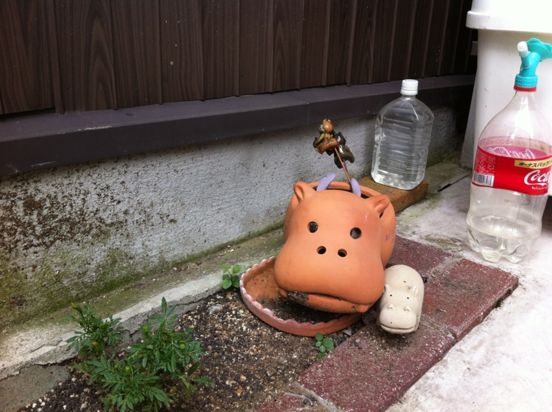
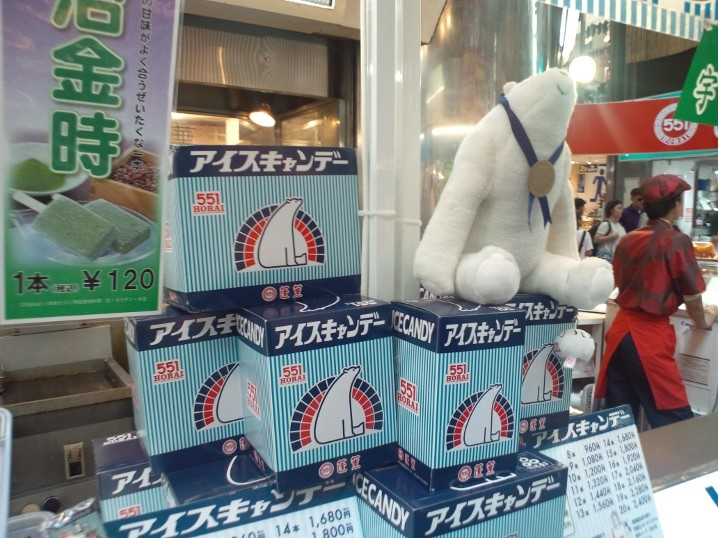

3人の祖母。
公開日：

わんくま同盟 大阪勉強会 #50 - だるろぐ のあとは、大阪・築港*1に住む祖母の様子をみにいった。祖母といっても血のつながった祖母ではなくて、本当は亡くなった父方の祖母の親友というべきヒトだ。でも、小さなころから亡き祖母と同じぐらいかわいがってもらっているし*2、まぁ、区別するのもめんどくさいからいつもは祖母ということにしている。
多少暑さに参っている感じはあったものの、具合はそれほど悪くもないようで、早く嫁を見つけないと死ぬに死ねない、などといろいろ言われた。じゃぁ、だったら嫁をもらわないほうが長生きしてくれるんじゃないか、と思ったけれど、それは黙っておいた。あとは、近所の中華屋さんでご飯食べたり、夜に TV でサッカーを観たり*3。エアコンのリモコンが壊れて電源が入らなくなっていたので、リモコンなしで動かす技も伝授してきた。これで暑さも多少は和らぐはず。
少し昔の話も聞いた。
亡くなった祖母には2人の親友がいたのだけれど（築港のおばあちゃんと、もう一人は亡くなった*4）、彼女たちは終戦後のまだ20そこそこの若い頃、博多で会ったのだそうだ。
祖母はどうなのか知らないが、この築港のおばあちゃんはいわゆる満州からの引揚者で、あの混乱の中出会い、お互いに助け合って生きてきたのだという。旦那たちは糧を得るのに必死だったので、子どもを産むときは互いに世話をしたという。きっとそれ以外にもいっぱいあったのだろうな。
その後、祖母は一度朝鮮に渡った。築港のおばあちゃんにもその理由はわからないのだけれど、小さいころに看護婦の写真をみせてもらった覚えがあるので、もしかしたら職を求めて渡ったのかもしれない。亡くなった祖父ともそこで知り合ったんだろうか。祖母はそれほど間を空けずに戻ってきたのだけれど*5、船ごと拿捕されて*6、迎えに行くまで留置場に入れられていたというのだから、ちょっと笑える。なかなかどうして、わが祖母ながらそんな話は聞いたこともなかった。
思い返せば、祖母には漢字などの手ほどきはしてもらった記憶などはあるけれど、昔の思い出についてはとんと聞いたことがなかったな。まぁ、そこから先、博多から京都・美山へ引っ越したあとのことはぼくでも多少は知っているのだけれど。

次の日はデートに付き合えというので、いっしょに難波まで行った。このばあちゃんは、やたら土産をもたせたがるのが悪いところだ。しかも、遠慮すると殴られる。食いきれないほどの551の豚まんを買うので、もって帰るのも面倒だし、そのまま実家へ送ってしまった。どうせお盆は実家に帰るし、そのときに食べられる。そのまえに母と妹に食い尽くされていなければの話だけれど。